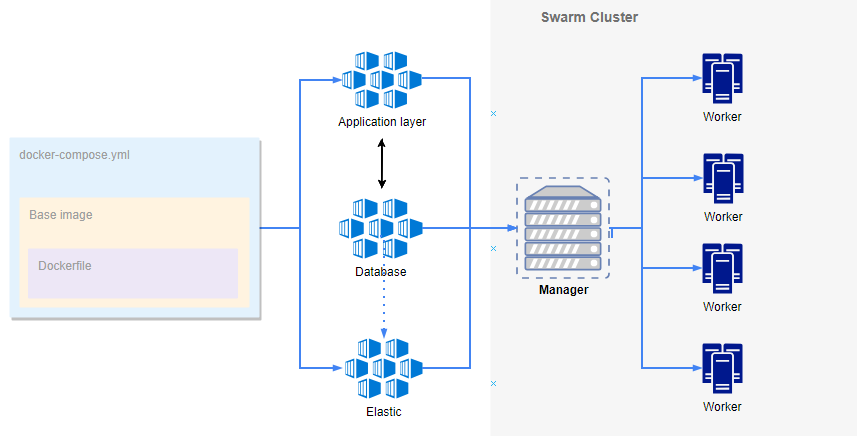

For the needs of this project have been set up two Apache CentosOS web servers and a proxy server (Nginx) for load balancing on the application layer. A Dockerfile pushed in Github has been used in order to build a custom image hosted in Docker hub. This image will be used into a docker-compose file including other services in order to build and deploy our application in a Swarm cluster.
The above architecture along with the improvement ideas will ensure high availability to the website, performance stability and excited users. (:

For the environment set up have been used 2 cloud VMs CentOS7 (Core) with Docker installed (Docker version 18.06.0-ce). Having a 2 nodes cluster, 1 swarm manager and 1 worker.
docker swarm init --advertise-addr <static_IP>
docker swarm join --token SWMTKN-1-302ydp0vgtz1w2zio1qg7l9b9n6orl6kxlrxjae61foh8qisvu-cur9mmjmhx2o2v77h80fk14k1 <IP>
docker stack deploy --compose-file docker-compose.yml <name>
A Jenkins job will automate the deployment of the application. The minimum requirements to achieve it consist of a job that downloads the docker-compose file(s) from an artifact repository and transfer it over ssh to the manager(s). The execution of the below command in each management node will deploy only the updated Docker services including configuration across the worker nodes of the Swarm cluster.
docker stack deploy --compose-file docker-compose.yml webstack
Since the application code is directly embedded in the base image, the Jenkins job could also easily update a concrete artifact inside the web server layer. The process can be automated even more according to the needs. For example, trigger a build process in this repository whenever a developer commits the code.
Below you may find some improvement steps for the provided solution and a few matters to be considered.
Short term:
Long term: